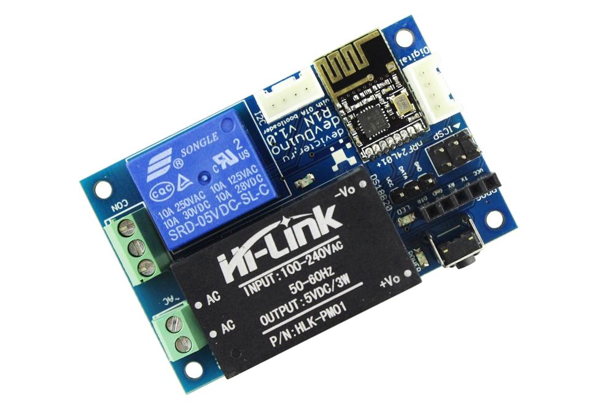
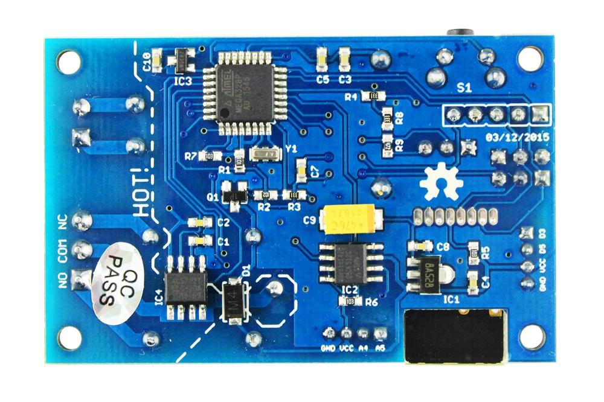
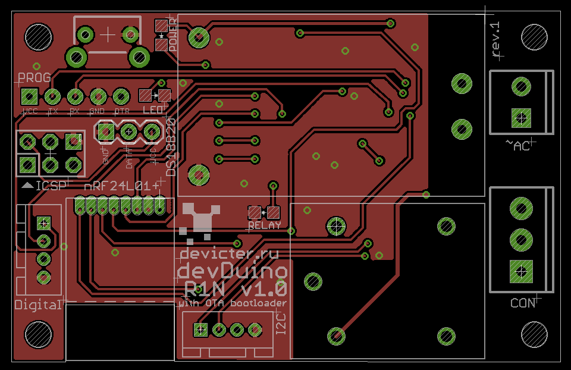
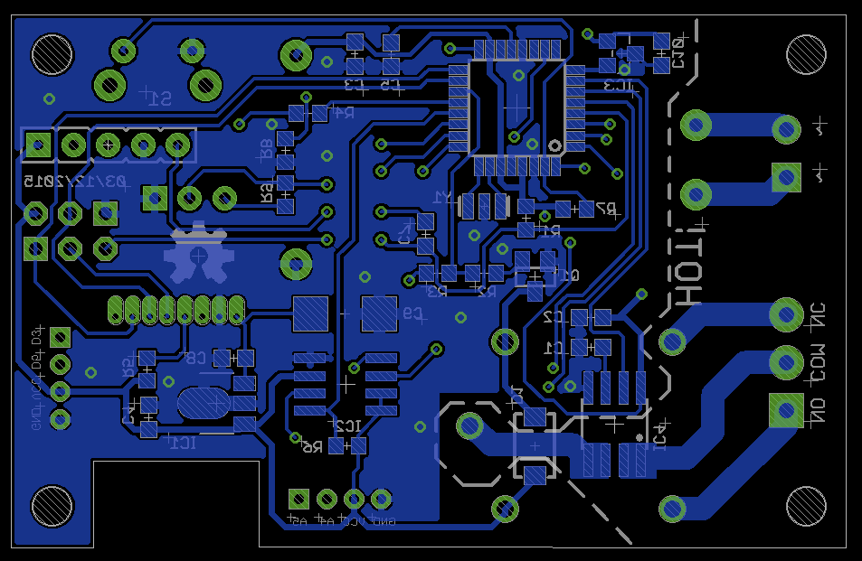
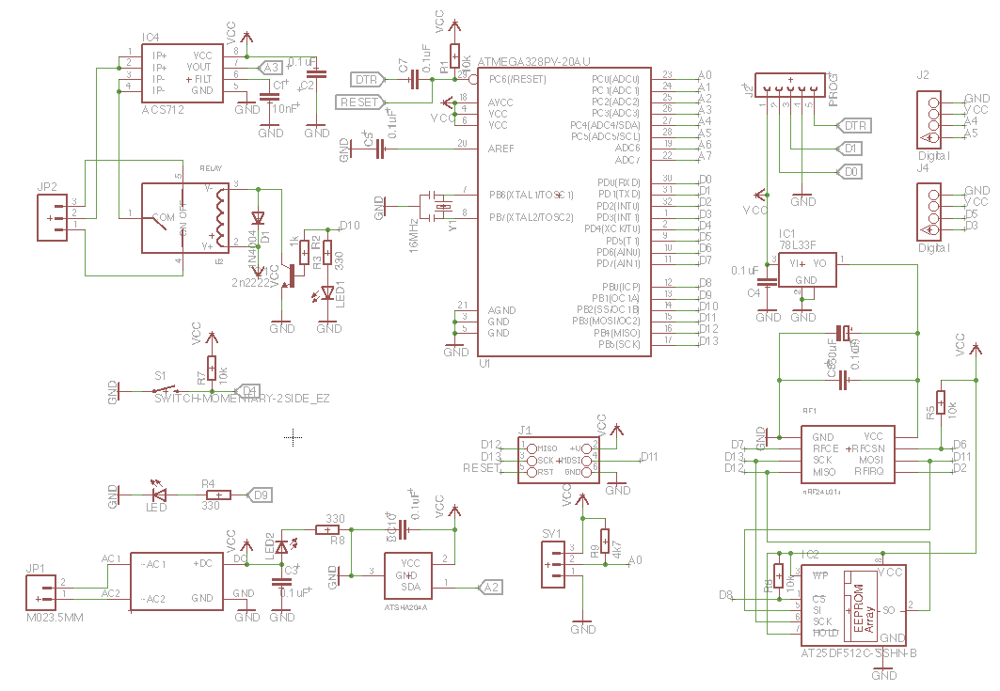

devDuino Relay 1 Node is a compact, Arduino-compatible microcontroller with a built-in power supply from the AC mains supply, a compact switch and is designed for wireless networks based on transceiver NRF24L01 +.
This version supports firmware upgrade over the air (on the basis of UNO Optiboot loader) and data encryption.
You can easily connect other sensors or display for this platform to build a remote monitoring or for example to make a smart thermostat.
Model: [SOON]
 
Supports update over the air only on the chip microcontrollers ATmega 328 with firmware (based loader UNO Optiboot).
 

Be very careful on the board there are components of high voltage!
To use the Relay Node requires the following libraries:
Software debugging and use
API
/* This sketch is for a devDuino Relay 1 Node v1.0 with the support OTA http://www.seeedstudio.com/wiki/DevDuino_R1N_V1.0 and MySensors 1.5 Support wireless updates available via Software MYSController http://www.mysensors.org/controller/myscontroller Is based on the coding for sensor Sensebender Micro http://www.mysensors.org/hardware/micro modified 27 May 2016 by greengo */ #include <MySensor.h> #include <SPI.h> #include "utility/SPIFlash.h" #include <EEPROM.h> #include <sha204_lib_return_codes.h> #include <sha204_library.h> // Define a static node address, remove if you want auto address assignment #define NODE_ADDRESS 10 #define SKETCH_NAME "devDuino R1Nv1.0" #define SKETCH_VERSION "1.1" #define NODE_REPEAT false #define CHILD_ID_RELAY 0 #define CHILD_ID_CURRENT_SENSOR 1 #define LED_PIN 9 // Led #define CURRENT_SENSOR_PIN A3 // Current sensor #define ATSHA204_PIN A2 // ATSHA204A #define RELAY_PIN_1 10 // Relay #define RELAY_ON 1 #define RELAY_OFF 0 // FORCE_TRANSMIT_INTERVAL, this number of times of wakeup, the sensor is forced to report all values to the controller #define FORCE_TRANSMIT_INTERVAL 300 //every 5 min unsigned long SLEEP_TIME = 1000; // Sleep time between reads (in milliseconds) #define CURRENT_TRANSMIT_THRESHOLD 0.20 const int sha204Pin = ATSHA204_PIN; atsha204Class sha204(sha204Pin); SPIFlash flash(8, 0x1F65); MyTransportNRF24 transport(7, 6); MySensor gw(transport); unsigned long CHECK_TIME = millis(); MyMessage msgRelayStatus(CHILD_ID_RELAY, V_LIGHT); MyMessage msgWatt(CHILD_ID_CURRENT_SENSOR, V_CURRENT); bool lightState; int measureCount = 0; float lastCurrent = 0; boolean transmission_occured = false; float sensorValue = 0; int countvalues = 50; // how many values must be averaged float ZeroLevel = 514; // Zero level //float kVolt = 0.0026; // conversion factor float kVolt = 0.0506; // conversion factor // the setup function runs once when you press reset or power the board void setup() { // initialize digital pin 9 as an output. pinMode(LED_PIN, OUTPUT); // Then set relay pins in output mode pinMode(RELAY_PIN_1, OUTPUT); // Then set current sensor pins in input mode pinMode(CURRENT_SENSOR_PIN , INPUT); digitalWrite(CURRENT_SENSOR_PIN, HIGH); // Make sure that ATSHA204 is not floating pinMode(ATSHA204_PIN, INPUT); digitalWrite(ATSHA204_PIN, HIGH); digitalWrite(LED_PIN, HIGH); gw.begin(incomingMessage, NODE_ADDRESS, NODE_REPEAT); digitalWrite(LED_PIN, LOW); gw.sendSketchInfo(SKETCH_NAME, SKETCH_VERSION); gw.present(CHILD_ID_RELAY, S_LIGHT); gw.present(CHILD_ID_CURRENT_SENSOR, S_MULTIMETER); sendPowerMeasurements(true); } // the loop function runs over and over again forever void loop() { gw.process(); unsigned long NOW_TIME = millis(); if(NOW_TIME - CHECK_TIME >= SLEEP_TIME) { measureCount ++; bool forceTransmit = false; transmission_occured = false; if (measureCount > FORCE_TRANSMIT_INTERVAL) { // force a transmission forceTransmit = true; measureCount = 0; } sendPowerMeasurements(forceTransmit); // Serial.print(" measureCount: "); // Serial.println(measureCount); CHECK_TIME = NOW_TIME; } } void sendPowerMeasurements(bool force) { bool tx = force; int CurrentValue = Current(CURRENT_SENSOR_PIN); float current = kVolt * (CurrentValue - ZeroLevel); delay(350); if ((current < 0)||(current < 2.80)) current = 0; else current = current; float diffCurrent = abs(lastCurrent - current); Serial.print(F(" >diffCurrent :"));Serial.println(diffCurrent); if (diffCurrent > CURRENT_TRANSMIT_THRESHOLD) tx = true; if (tx) { measureCount = 0; // Led digitalWrite(LED_PIN, HIGH); gw.send(msgWatt.set(current,1)); digitalWrite(LED_PIN, LOW); } lastCurrent = current; transmission_occured = true; Serial.print("Cur: ");Serial.println(current); } int Current(int sensorPin) { float TMPsensorValue = 0; int count = 0; for (count =0; count < countvalues; count++) { // read the value from the sensor: TMPsensorValue = analogRead(sensorPin); delay(30); // make average value sensorValue = (sensorValue+TMPsensorValue)/2; } return sensorValue; } //******************************************* void incomingMessage(const MyMessage &message) { if (message.isAck()) { Serial.println("This is an ack from gateway"); } if ((message.type == V_LIGHT) && (message.sensor == CHILD_ID_RELAY)) { // Change relay state lightState = message.getBool(); digitalWrite(RELAY_PIN_1, lightState?RELAY_ON:RELAY_OFF); // Store state in eeprom //gw.saveState(CHILD_ID_RELAY, lightState); Serial.print("Incoming change for Light:"); Serial.print(message.sensor); // Serial.print(message.type); Serial.print(", New status: "); Serial.println(message.getBool()); } }
| Revision | Description | Release |
| 1.0 rev 1 | Public version | 03.12.2015 |
This product can be purchased:
China (shipping worldwide)
[Seeed store]
Elecrow store
Russia
Devicter store
This documentation is licensed under the Creative Commons Attribution-ShareAlike License 3.0 Source code and libraries are
licensed under GPL/LGPL, see source code files for details.
Copyright (c) 2008-2016 Seeed Development Limited (www.seeedstudio.com / www.seeed.cc)